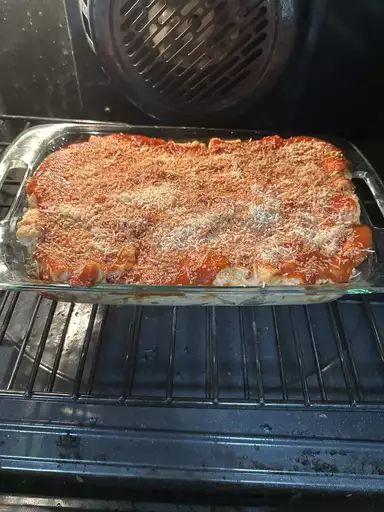

Baked Ziti

Easy baked ziti recipe
Baked ziti recipe from allrecipes.com. Contains 3 cheese, pasta, and marinara sauce.
Ingredients
- 1 (16 ounce) package ziti pasta
- 24 ounces ricotta cheese
- 1 pound shredded mozzarella cheese
- 1 egg, beaten
- 1 (32 ounce) jar spaghetti sauce
- ¼ cup grated Parmesan cheese
Steps
- Preheat the oven to 375 degrees F (190 degrees C). Lightly grease a 9x13-inch baking dish.
- Meanwhile, bring a large pot of lightly salted water to a boil. Add ziti and cook for 8 to 10 minutes or until al dente; drain and rinse.
- Combine cooked ziti, ricotta cheese, mozzarella cheese, egg, and 1 1/2 cups spaghetti sauce in a medium bowl.
- Transfer into the prepared baking dish. Top with remaining spaghetti sauce, then sprinkle with Parmesan cheese.
- Bake in the preheated oven for 30 minutes; let stand for 15 minutes before serving.